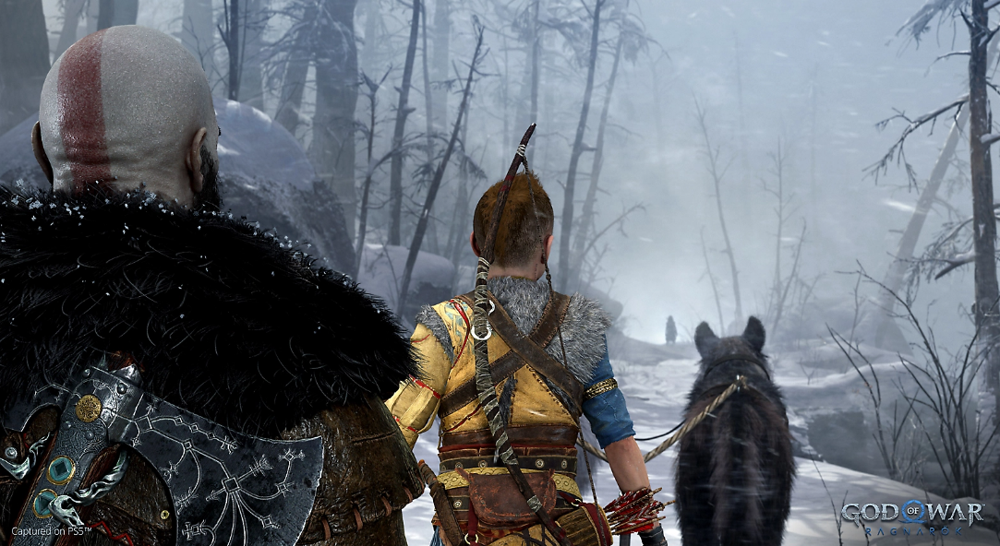
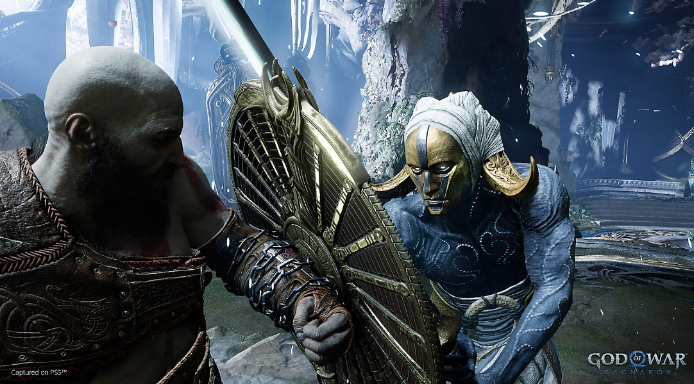
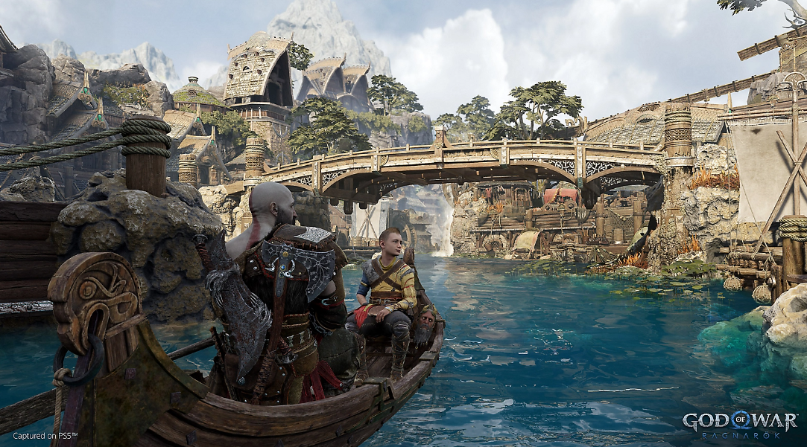

Embárcate en un épico y cordial viaje mientras Kratos y Atreus luchan por aferrarse y soltar 


God of War Ragnarök
Desde Santa Monica Studio llega la secuela del aclamado por la crítica God of War (2018).
Fimbulvetr ya está en camino. Kratos y Atreus deben viajar a cada uno de los nueve reinos en
búsqueda de respuestas, mientras que las fuerzas asgardianas se preparan para una batalla
profetizada que terminará con el mundo. En el camino explorarán paisajes increíbles y míticos, y
se enfrentarán a aterradores enemigos en la forma de dioses nórdicos y monstruos. La amenaza del
Ragnarök cada vez está más cerca. Kratos y Atreus deben elegir entre su propia seguridad y la
seguridad de los reinos.
LA SAGA NÓRDICA CONTINÚA